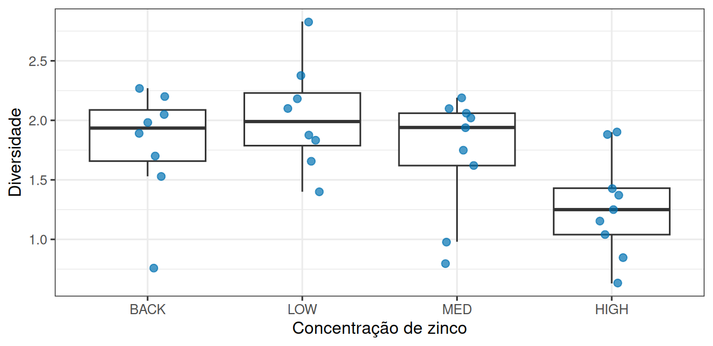
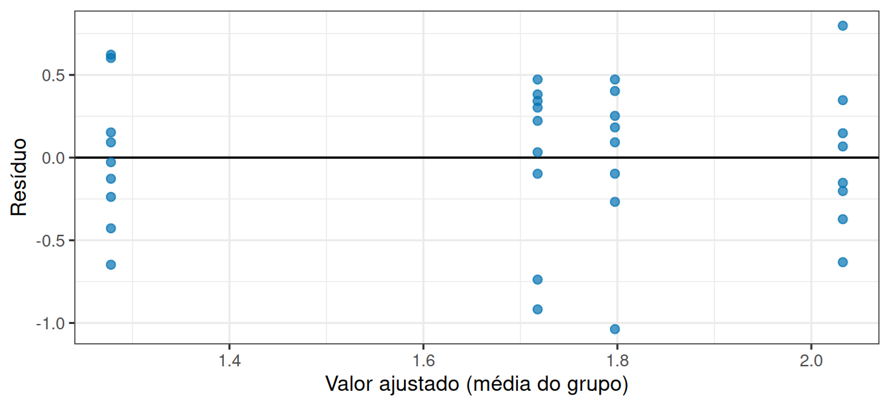
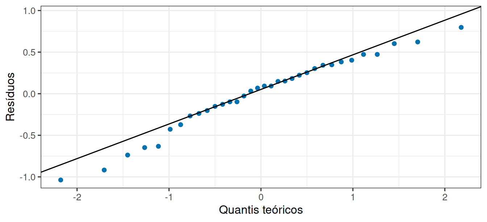
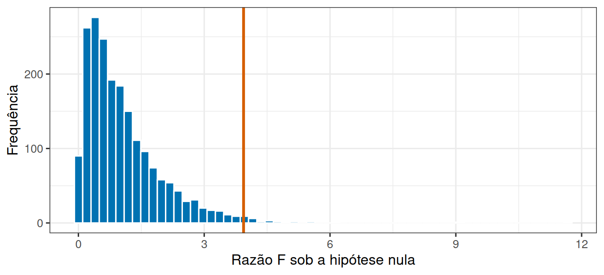

library(tidyverse)
theme_set(theme_bw(base_size = 12))Um fator, quatro níveis
Prática em R 07
1 Quatro concentrações de zinco
Um estudo mediu a diversidade de algas em canais sob quatro concentrações de zinco: BACK (concentração de fundo, o controle), LOW, MED e HIGH.
Com quatro grupos, comparar de dois em dois resulta em seis comparações. Nesta prática vamos fazer o que faz sentido: uma pergunta só para o conjunto, e só depois olhar os pares.
2 Vamos abrir os dados
url <- "https://raw.githubusercontent.com/FCopf/datasets/refs/heads/main/medley.csv"
algas <- read_csv(url, show_col_types = FALSE)
glimpse(algas)Rows: 34
Columns: 3
$ STREAM <chr> "Eagle", "Eagle", "Eagle", "Eagle", "Blue", "Blue", "Blue", …
$ ZINC <chr> "BACK", "HIGH", "HIGH", "MED", "BACK", "HIGH", "BACK", "BACK…
$ DIVERSITY <dbl> 2.27, 1.25, 1.15, 1.62, 1.70, 0.63, 2.05, 1.98, 1.04, 2.19, …Trinta e quatro canais, cada um com a sua concentração de zinco (ZINC) e o seu índice de diversidade (DIVERSITY).
algas |> count(ZINC)# A tibble: 4 × 2
ZINC n
<chr> <int>
1 BACK 8
2 HIGH 9
3 LOW 8
4 MED 9Os níveis não estão na ordem que interessa. Vamos ordená-los do menor para o maior zinco, o que vale tanto para as tabelas quanto para o eixo do gráfico:
algas <- algas |>
mutate(ZINC = fct_relevel(ZINC, "BACK", "LOW", "MED", "HIGH"))
levels(algas$ZINC)[1] "BACK" "LOW" "MED" "HIGH"3 Como os grupos se comparam?
algas |>
group_by(ZINC) |>
summarise(
n = n(),
media = mean(DIVERSITY),
desvio = sd(DIVERSITY)
)# A tibble: 4 × 4
ZINC n media desvio
<fct> <int> <dbl> <dbl>
1 BACK 8 1.80 0.485
2 LOW 8 2.03 0.445
3 MED 9 1.72 0.503
4 HIGH 9 1.28 0.427ggplot(algas, aes(x = ZINC, y = DIVERSITY)) +
geom_boxplot(outlier.shape = NA) +
geom_jitter(width = 0.12, size = 2.2, alpha = 0.7, colour = "#0072B2") +
labs(x = "Concentração de zinco", y = "Diversidade")
4 Duas fontes de variação
A ideia da análise de variância é comparar duas coisas:
- o quanto as médias dos grupos se afastam da média geral;
- o quanto os canais dentro de um mesmo grupo se afastam da média do seu grupo.
Se a primeira for grande em relação à segunda, o zinco separa os grupos além do que o ruído explicaria. A função aov() faz essa conta:
modelo <- aov(DIVERSITY ~ ZINC, data = algas)
summary(modelo) Df Sum Sq Mean Sq F value Pr(>F)
ZINC 3 2.567 0.8555 3.939 0.0176 *
Residuals 30 6.516 0.2172
---
Signif. codes: 0 '***' 0.001 '**' 0.01 '*' 0.05 '.' 0.1 ' ' 1A fórmula DIVERSITY ~ ZINC lê-se “diversidade em função de zinco”.
A tabela traz, em cada linha, os graus de liberdade (Df), a soma de quadrados (Sum Sq), o quadrado médio (Mean Sq), a razão F e o valor de p. A linha ZINC é a variação entre grupos; a linha Residuals é a variação dentro dos grupos.
5 O que esse valor de p responde
Ele responde a uma pergunta: “as quatro médias são todas iguais?”. Um valor pequeno indica que essa descrição não se sustenta.
Ele não diz quais concentrações diferem entre si. Para isso existe o passo seguinte.
6 Os resíduos se comportam bem?
Antes de seguir, vale conferir se o modelo é razoável. Dois gráficos bastam:
diagnostico <- tibble(
ajustado = fitted(modelo),
residuo = residuals(modelo)
)
ggplot(diagnostico, aes(x = ajustado, y = residuo)) +
geom_hline(yintercept = 0, linewidth = 0.6) +
geom_point(size = 2, alpha = 0.7, colour = "#0072B2") +
labs(x = "Valor ajustado (média do grupo)", y = "Resíduo")
ggplot(diagnostico, aes(sample = residuo)) +
stat_qq(colour = "#0072B2") +
stat_qq_line() +
labs(x = "Quantis teóricos", y = "Resíduos")
7 Quais concentrações realmente diferem?
Agora sim, as comparações par a par. O teste de Tukey compara todos os pares ajustando para o fato de que são várias comparações:
TukeyHSD(modelo) Tukey multiple comparisons of means
95% family-wise confidence level
Fit: aov(formula = DIVERSITY ~ ZINC, data = algas)
$ZINC
diff lwr upr p adj
LOW-BACK 0.23500000 -0.3986367 0.86863665 0.7457444
MED-BACK -0.07972222 -0.6955064 0.53606192 0.9847376
HIGH-BACK -0.51972222 -1.1355064 0.09606192 0.1218677
MED-LOW -0.31472222 -0.9305064 0.30106192 0.5153456
HIGH-LOW -0.75472222 -1.3705064 -0.13893808 0.0116543
HIGH-MED -0.44000000 -1.0373984 0.15739837 0.2095597Cada linha é um par. A coluna diff é a diferença entre as médias, lwr e upr delimitam o intervalo de confiança dessa diferença, e p adj é o valor de p ajustado.
8 E se o zinco não fizesse nada?
Para calibrar a leitura do F, vale ver que valores ele assume quando não há efeito algum:
f_observado <- summary(modelo)[[1]][["F value"]][1]
media_geral <- mean(algas$DIVERSITY)
desvio_residual <- sigma(modelo)
f_nulos <- replicate(2000, {
simulado <- tibble(
grupo = rep(c("a", "b", "c", "d"), length.out = 34),
valor = rnorm(34, mean = media_geral, sd = desvio_residual)
)
summary(aov(valor ~ grupo, data = simulado))[[1]][["F value"]][1]
})
ggplot(tibble(f = f_nulos), aes(x = f)) +
geom_histogram(bins = 60, fill = "#0072B2", colour = "white") +
geom_vline(xintercept = f_observado, colour = "#D55E00", linewidth = 1.1) +
labs(x = "Razão F sob a hipótese nula", y = "Frequência")
O sigma(modelo) devolve a variação residual estimada nos dados reais, e é ela que usamos para simular canais sem nenhum efeito de zinco.
proporcao_maiores <- mean(f_nulos >= f_observado)
proporcao_maiores[1] 0.013Nesta simulação, 1,3% dos 2000 experimentos sem efeito nenhum produziram um F igual ou maior que o observado. Compare esse número com o valor de p da tabela do summary(modelo): os dois caminhos (a simulação e a distribuição teórica de F) levam praticamente ao mesmo lugar.